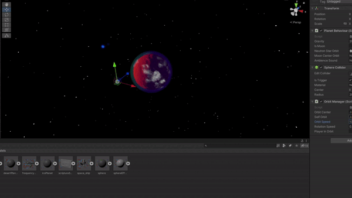
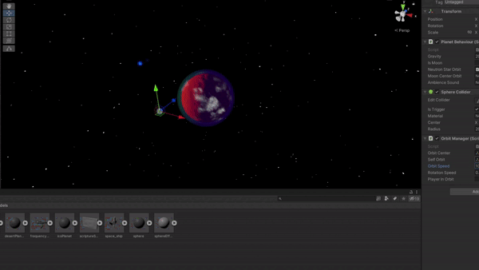

Sobre Mim
Em 2016 eu desenvolvi a curiosidade pela programação. A partir desta época, comecei a pesquisar e estudar por conta própria e aprendi sobre o desenvolvimento de jogos, web, servidores e diversos outros tópicos que me chamavam a atenção. Em 2018, comecei a estudar para vestibulares com o intuíto de passar em uma faculdade de medicina. Após 2 anos, esse meu objetivo foi concluído, porém decidi seguir uma área na qual eu tinha mais afinidade. Desse modo, eu comecei o curso de Engenharia Mecatrônica.
Atualmente, estou qualificando minhas habilidades em um curso de Engenharia de Software do exterior para me inserir de vez no mercado de programação. Durante esses anos, desenvolvi uma extrema facilidade em aprender qualquer tipo de conceito ou linguagem de programação. Escrever códigos para mim é tão natural quanto ler um livro.
Projetos
Exploração Espacial
O meu projeto mais recente foi voltado para os estudos de game design e ciência da computação. No projeto que eu denominei "Rise of The Dying Sun", decidi criar um jogo em que um personagem silencioso explora um sistema solar vazio. Para isso, programei a física de atração gravitacional dos planetas utilizando fórmulas e conceitos físicos reais elaborados ao longo da história da humanidade.

 
